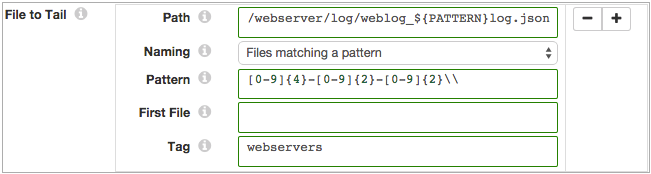

File Tail
The File Tail origin reads lines of data as they are written to an active file after reading related archived files in the same directory. File Tail generates a record for each line of data.
When you configure File Tail, you define the full path to the active file, the naming convention for archived files, and the first archived file to process. These properties determine the set of files that are read and the order of processing.
For example, a File Tail is configured to tail a log called server.log, starting with server.log.1, expecting archived files named in reverse counter order. When the pipeline runs, it starts reading lines from the beginning of server.log.1, ignoring older files. When it reaches the end of server.log.1, it continues processing data in server.log. When it completes reading existing data in server.log, it tails incoming data for the file.
When you stop a pipeline, File Tail notes where it stops reading. When you restart the pipeline, File Tail continues processing from the line where it left off, even if it has been archived to a different file.
You can reset the origin for File Tail. When you reset the origin, the File Tail treats all properties as if you are starting the pipeline for the first time - processing all requested files before continuing to the active file.
File Tail includes additional header attributes that enable you to include the provenance of a record in the record. For more information, see Record Header Attributes.
File Processing and Archived File Names
File Tail processes the active file and archived files based on how the source server generates files. When you specify the naming convention for archived files, File Tail determines the file generation method and processes the data accordingly.
- The server writes data to a single active file and generates archive files as needed
- The server writes new data to a single file, such as weblog.log. Periodically, it rolls older data from the active file to an archive file, such as weblog.log1 or weblog.log.2015-10-15.
- File Tail intelligently tracks its relative progress through new and archived data and is not affected by file name changes.
- File Tail can process archived files that use the following naming conventions:
- Active File with Reverse Counter - The server appends a
number to the end of each archived file, such as data.1, data.2, and so on.
File Tail processes files in reverse numeric order before progressing to the active file.
- Active File with Date - The server appends a date to the
end of the archived file, such as event.log.2015-11, event.log.2015-12. This method
is generally used by Log4j servers. File Tail provides a set of available date
patterns. If the date pattern of your log files is not available, you might use
Alphabetical.
File Tail processes files in reverse order based on the selected date pattern before progressing to the active file.
- Active File with Alphabetical - The server generates files
in alphabetically increasing order, such as file.json.a, file.json.b, file.json.c.
You might use this method to process Apache logs archived with the logrotate
utility. You can also use Alphabetical to process files with appended dates that do
not match the provided date patterns.
File Tail processes files in alphabetical order before progressing to the active file.
- Active File with Reverse Counter - The server appends a
number to the end of each archived file, such as data.1, data.2, and so on.
- The server writes a new active file as needed, archiving the previous file without renaming
- The server writes to an active file, creating a new active file as necessary. When it creates a new active file, it archives the previous active file without renaming it. The active file changes, but file names do not change.
- The server generates files using a pattern that you can define with a regular expression.
- Use Files Matching a Pattern as the archive file naming convention.
- File Tail processes the files in alphabetical order before progressing to the most recent file - the active file.
- For example, if you use log_[0-9]{4}-[0-9]{2}-[0-9]{2}\\.json as the file name pattern, File Tail might read log-2015-5-01.json, then log-2015-05-02.json, and so on - until it reaches the file for the current date.
Multiple Paths and File Sets
File Tail can read sets of files in different directories. When File Tail processes different sets of files, it merges all data in the pipeline. If you need to separate the records later, you can use the tag record attribute.
To define a set of files to be processed, you specify the full path to an active file and related properties. You can define additional file sets by configuring a set of properties for each set of files.
- The part of the path before wildcards must exist when the pipeline starts unless
you enable the origin to read from late directories. Use the Allow Late
Directories property to allow reading from late directories.For example, without late directories enabled, the /server/ part of the following directory must exist when you start the pipeline.
/server/*/activity.log
- While you can use multiple wildcards in a path, do not use multiple wildcards in
a row.For example, this path is valid:
/user/*/logs/*/log-*.json
But the following path does not pass validation because it includes two adjacent wildcards:
/user/*/logs/*/*/log-*.json
Late Directories
You can configure File Tail to read files in late directories - directories that appear after the pipeline starts.
When reading from late directories, File Tail does not validate the directory path when you start the pipeline. If no valid directories exist when the pipeline starts, File Tail waits indefinitely for the appearance of a valid directory and a file to tail.
For example, say you want to tail the following files:
/logs/*/server/*/log.json
No valid directory or file exists when you start the pipeline, so File Tail waits until a valid directory and file appears before tailing the file.
This file path allows the origin to tail the files in the following late-arriving directories:
/logs/region1/server/8/log.json /logs/region2/server/15/log.json /logs/cloud/server/23/log.json
Files Matching a Pattern - Pattern Constant
When you use the Files Matching a Pattern naming option, use the PATTERN constant as a placeholder for the file name pattern. Then you use the Pattern property to define the PATTERN constant.
For example, the following properties process data in files named weblog_<yyyy>-<mm>-<dd>.json and add a "webservers" tag attribute to each record:

Defining and Using a Tag
A tag is an optional record attribute that you can define for sets of files. In the pipeline, you can use a function to return the value of the tag.
Define a tag so you can easily reference tagged records. You can define a tag for files specified by a path. Note that when you use wildcards or glob patterns in a path to represent several sets of files, those files would all use the same tag.
record:attribute('tag')
${record:attribute('tag')='ServerA'}
${record:attribute('tag')='ServerB'}
Multiple Line Processing
File Tail can process log and text data that includes multiple lines. You might use multiple line processing to include stack traces with log data, or to process MySQL multiline logs.
To process multiline data, you use a regular expression to define the pattern of the standard line. When File Tail encounters data that does not match the pattern, it appends the non-matching data to the previous line.
Evaluating data for the pattern can impact performance, so use multiple line processing only when required.
File Tail Output
File Tail provides data and related metadata through separate output streams. If you don't need to use the related metadata, you can connect the output stream to a Trash destination.
- Data
- Passes data read from the origin.
- Metadata
- Passes information generated about file processing. To retain this information for review, connect the metadata output location to any other destination or route the data as necessary. If you do not require this information, connect the metadata output location to the Trash destination.
- File processing metadata includes the following fields:
- fileName - Name of the file.
- inode - Index information for the file.
- time - Time that the event occurred.
- event - Processing event. START indicates that File Tail started processing the specified file. END indicates that File Tail completed processing the contents of the file.
-
Note: Inode most reliably identifies a file when a server renames archived files.
Data Formats
The File Tail origin processes lines of data. The origin handles data differently based on the type of data being processed. File Tail can process the following types of data:
- JSON
- Generates a record for each JSON object. Each JSON object must be written to file as a single line.
- When an object exceeds the maximum line length defined for the origin, File Tail processes the object based on the error handling configured for the origin.
- Log
- Generates a record for every log line.
- When a line exceeds the maximum line length defined for the origin, File Tail truncates the line.
- You can include the processed log line as a field in the record. If the log line is truncated, and you request the log line in the record, File Tail includes the truncated line.
- You can define the log format or type to be read.
- Text
- Generates a record for each line in the file.
- When a line exceeds the maximum line length defined for the origin, File Tail truncates the line. The origin adds a boolean field named Truncated to indicate if the line was truncated.
Log Formats
When you use an origin to read log data, you define the format of the log files to be read.
You can read log files that use the following log formats:
- Common Log Format
- A standardized text format used by web servers to generate log files. Also known as the NCSA (National Center for Supercomputing Applications) Common Log format.
- Combined Log Format
- A standardized text format based on the common log format that includes additional information. Also known as the Apache/NCSA Combined Log Format.
- Apache Error Log Format
- The standardized error log format generated by the Apache HTTP Server 2.2.
- Apache Access Log Custom Format
- A customizable access log generated by the Apache HTTP Server 2.2. Use the Apache HTTP Server version 2.2 syntax to define the format of the log file.
- Regular Expression
- Use a regular expression to define the structure of log data, and then assign the field or fields represented by each group.
- Use any valid regular expression.
- Grok Pattern
- Use a grok pattern to define the structure of log data. You can use the grok patterns supported by Data Collector. You can also define a custom grok pattern and then use it as part of the log format.
- For more information about supported grok patterns, see Defining Grok Patterns.
- log4j
- A customizable format generated by the Apache Log4j 1.2 logging utility. You can use the default format or specify a custom format. Use the Apache Log4j version 1.2 syntax to define the format of the log file.
- You can also specify the action to take when the origin encounters an error when parsing a line. You can skip the line and optionally log an error. If you know that the unparsable information is part of a stack trace, you can have the origin include the unparsable information as a stack trace to the previous parsable line.
Configuring a File Tail Origin
-
In the Properties panel, on the General tab, configure the
following properties:
General Property Description Name Stage name. Description Optional description. On Record Error 
Error record handling for the stage: - Discard - Discards the record.
- Send to Error - Sends the record to the pipeline for error handling.
- Stop Pipeline - Stops the pipeline.
-
On the File tab, configure the following
properties:
File Property Description Data Format 
Format of data in the file. Use one of the following options: - JSON
- Log
- Text
Pattern for Multiline Regular expression that defines the pattern for the standard line of text or log line. Maximum Batch Size Maximum number of lines to include in a batch. Honors values up to the Data Collector maximum batch size. Default is 1000. The Data Collector default is 1000.
Batch Wait Time (secs) Number of seconds to wait before sending a batch. File to Tail Directories and sets of files to process. Click the Add icon to enter additional sets of information. Path Full path to the active file to tail. You can use wildcards to define glob patterns. Do not use multiple wildcards in a row. The path before the wildcard must exist unless you enable reading from late directories.
Naming Naming convention for archived files. Select the naming convention that describes how the server generates file names. Pattern Regular expression that defines the file name pattern used to create files. You can use UNIX-style wildcards, such as an asterisk or question mark.
Available only for the Files Matching a Pattern naming option.
First File Name of the first file to process when you start the pipeline. Use a name that uses the file name pattern. Leave empty to read all files in the directory with the specified naming convention. When you enter a file name, File Tail reads the first file and then progresses to the active file.
When you restart a stopped pipeline, File Tail ignores this property. It starts where it left off regardless of the file name unless you reset the origin.Tag An optional attribute defined for the record to help you differentiate between different sets of records. Allow Late Directories Allows reading files from directories that appear after the pipeline starts. When enabled, the origin does not validate the file path. Charset Character encoding of the data to be processed. Ignore Ctrl Characters Removes all ASCII control characters except for the tab, line feed, and carriage return characters. Compression Format The compression format of the files: - None - Processes only uncompressed files.
- Compressed File - Processes files compressed by the supported compression formats.
- Archive - Processes files archived by the supported archive formats.
- Compressed Archive - Processes files archived and compressed by the supported archive and compression formats.
-
For text data, on the Text tab, configure the following properties:
Text Property Description Max Line Length Maximum number of characters allowed for a line. Longer lines are truncated. Adds a boolean field to the record to indicate if it was truncated. The field name is Truncated.
Use Custom Delimiter Uses custom delimiters to define records instead of line breaks. Custom Delimiter One more more characters to use to define records. Include Custom Delimiter Includes delimiter characters in the record.